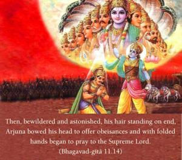
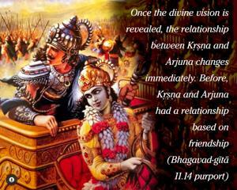
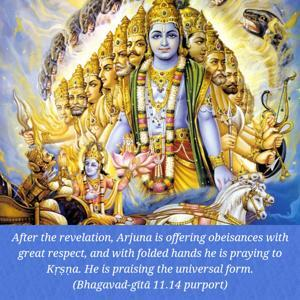
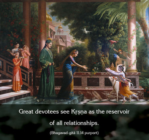

Then, bewildered and astonished, his hair standing on end, Arjuna bowed his head to offer obeisances and with folded hands began to pray to the Supreme Lord.




Once the divine vision is revealed, the relationship between Kṛṣṇa and Arjuna changes immediately. Before, Kṛṣṇa and Arjuna had a relationship based on friendship, but here, after the revelation, Arjuna is offering obeisances with great respect, and with folded hands he is praying to Kṛṣṇa. He is praising the universal form. Thus Arjuna’s relationship becomes one of wonder rather than friendship. Great devotees see Kṛṣṇa as the reservoir of all relationships. In the scriptures there are twelve basic kinds of relationships mentioned, and all of them are present in Kṛṣṇa. It is said that He is the ocean of all the relationships exchanged between two living entities, between the gods, or between the Supreme Lord and His devotees.
Here Arjuna was inspired by the relationship of wonder, and in that wonder, although he was by nature very sober, calm and quiet, he became ecstatic, his hair stood up, and he began to offer his obeisances unto the Supreme Lord with folded hands. He was not, of course, afraid. He was affected by the wonders of the Supreme Lord. The immediate context is wonder; his natural loving friendship was overwhelmed by wonder, and thus he reacted in this way.